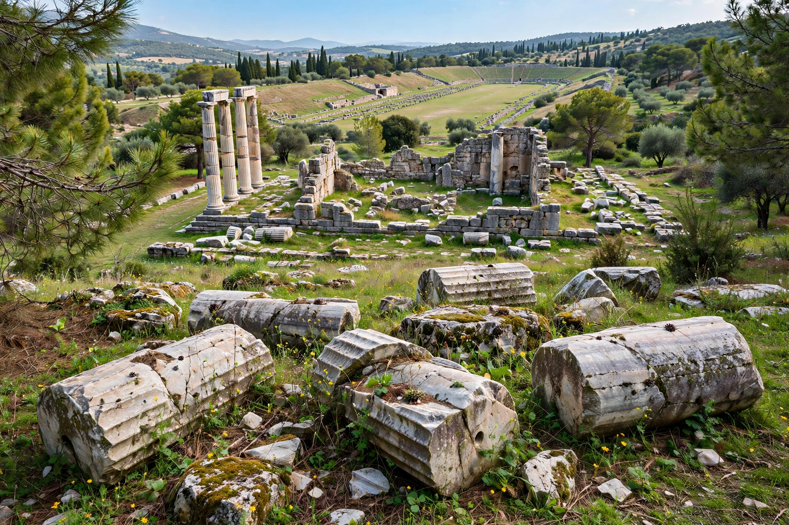

| Location | Elis, Peloponnese, Greece |
|---|---|
| Type | Sanctuary and ancient games site |
| Founded | Games traditionally from 776 BC |
| Abandoned | 6th century AD |
| Status | UNESCO World Heritage Site (1989) |
Olympia (Greek: Ὀλυμπία) is a small town in Elis on the Peloponnese peninsula in Greece, famous for the nearby archaeological site of the same name. The site was a major Panhellenic religious sanctuary of ancient Greece, where the ancient Olympic Games were held every four years throughout classical antiquity, from the 8th century BC to the 4th century AD.
The sanctuary, known as the Altis, consisted of an unordained arrangement of temples, treasuries and sporting structures within a walled enclosure. It was dedicated to Zeus, whose colossal gold-and-ivory statue by Phidias — counted among the Seven Wonders of the Ancient World — stood in the Temple of Zeus.
Principal buildings included the Temple of Zeus (470–456 BC), the older Temple of Hera, the Metroon, the Bouleuterion, the Philippeion, and the stadium, which held some 45,000 spectators and was entered through a vaulted tunnel. The workshop of Phidias, where the great statue was made, was later converted into a Byzantine church. Treasuries built by city-states lined a terrace at the foot of the Hill of Cronus.
Tradition dates the first games to 776 BC, when Koroibos of Elis won the stadion footrace — for centuries the only event. Later additions included the diaulos, the dolichos, wrestling, boxing, the pankration, chariot racing and the pentathlon. The games were held during a sacred truce (ekecheiria) that allowed athletes and spectators to travel safely. Victors received only a wreath of wild olive, but won lasting fame at home.
The games were suppressed in the late 4th century AD under the Christian emperor Theodosius I (and formally under Theodosius II), the temples were damaged by earthquakes in the 6th century, and the site was buried by flooding of the Alpheios and Kladeos rivers. French and then German excavations from 1875 uncovered the site; finds are displayed in the Archaeological Museum of Olympia, including the Hermes of Praxiteles and the Nike of Paionios.
The modern town (Archaia Olympia) serves the site's visitors. The Olympic flame for the modern Olympic Games is lit by a parabolic mirror at the sanctuary before each Games and carried by relay to the host city. The site was inscribed on the UNESCO World Heritage List in 1989.
See also: Ancient Olympic Games · Zeus · Olympic Games